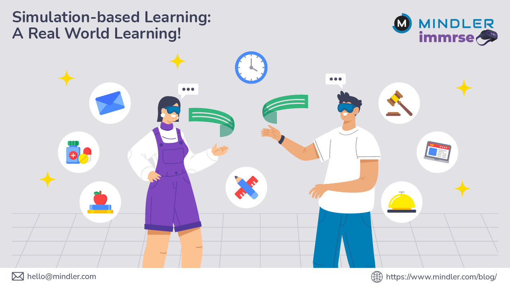

Rivoluziona l'apprendimento diplomatico con simulazioni immersive guidate dall'intelligenza artificiale. Prepara i futuri leader globali attraverso scenari realistici e feedback personalizzato.
Un ambiente didattico sperimentale che trasforma l'apprendimento diplomatico
Ogni studente è affiancato da un assistente AI che fornisce guida contestuale, suggerisce tattiche e aiuta a migliorare le strategie diplomatiche.
Simulazioni basate su crisi internazionali reali con eventi dinamici, opposizioni e imprevisti generati dall'AI in tempo reale.
Studenti divisi in delegazioni che negoziano, formano alleanze e gestiscono comunicazioni diplomatiche complesse.
Analisi in tempo reale delle decisioni con KPI diplomatici e feedback personalizzato per il miglioramento continuo.
Possibilità di rivedere simulazioni, confrontare performance e generare report accademici dettagliati.
Supporto per studenti in diversi fusi orari con simulazioni a lunga durata e campagne annuali virtuali.
Infrastruttura tecnologica progettata per l'eccellenza educativa
Interfaccia web intuitiva per gestire simulazioni e monitorare progressi
Modello AI addestrato su dataset storico-diplomatici specializzati
Registro eventi e output esportabili in PDF/HTML per analisi approfondite
Perché scegliere il nostro sistema di simulazione diplomatica

Esperienza pratica che supera la teoria tradizionale, preparando studenti per sfide reali
Rafforzamento di comunicazione, negoziazione, pensiero critico e capacità decisionali
Soluzione adattabile per università, master, scuole di diplomazia e accademie militari
Potenziale per diventare caso studio internazionale nel settore educativo
La roadmap verso l'innovazione continua
Campagne annuali virtuali per esperienze diplomatiche estese
Modelli LLM ostili che impersonano potenze esterne per sfide avanzate
Integrazione di cyber-security, disinformazione e crisi climatiche
Collaborazioni con università, think tank e organizzazioni internazionali
Unisciti alla nuova era dell'apprendimento immersivo con intelligenza artificiale